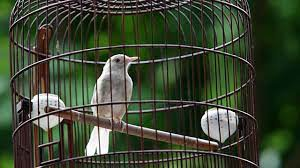
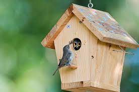

Birds are one of the symbol of freedom. They live in the forest flying and hunting from various location. They are remained untouched by humans. But sometimes other are evolved to coexist with our society and living in the cities road to get food. It can't be avoided that they might get hunted by humans and stored in an isolated cage. Which is very controversial on Human Ethics of having birds as pet. But there are great example of people taking care of birds as pets.
Having a bird as pet can be controversial, learning from the psychology of isolation. Most of the time birds are stuck in the iron cage for the rest of their lives and never feel the breeze of the wind and flying with other birds. But pet owners are different from those people who isolates birds. As far as experience from other people, becoming a bird owner can be seem as accident. Birds can gain affection to humans if you feed them repeatedly in daily manners. And they gain positive benefits which makes them come again. Some of the bird owners I know, build a small birdhouse where bird can rest and sometimes build a nest there. They are free to fly and come again, No restriction unlike bird cages.
As with food, birds are self-nurturing pets they travel on their own to find their own food still you can feed them if you wanted. Depending on the bird species they can have lots of intelligence and can be trained. Birds have short lifespan and living in the fullest.